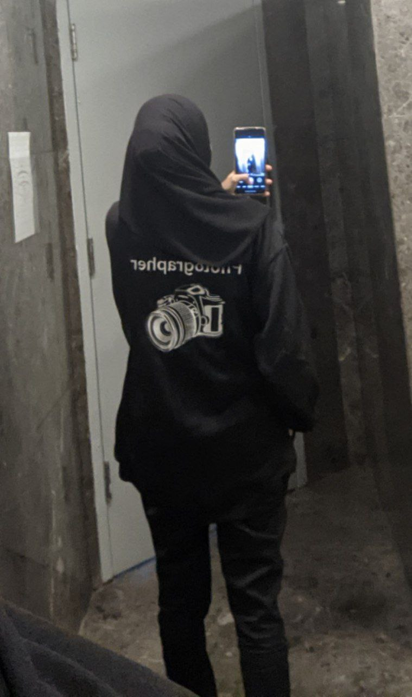

The only source of knowlegde is experience by Albert Einstein

me in my uniform
As soon as i finished my Matriculation, I continued working as photographer at PERONAS TWIN TOWER KLCC in Kuala Lumpur while waiting matric's result to gin experience at the sme time get some money. At first i felt nervous but as time goes by i can endured. My work has tought me that it's okey to embrace solitude. The hard thing is when i miss my home specially my family bucause i need to stay at rent house.